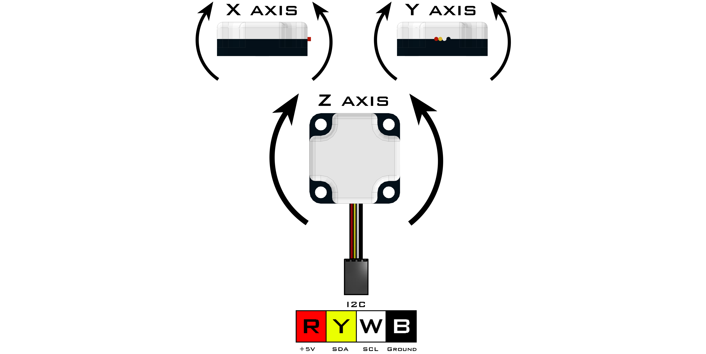

Integrating Gyro (45-2005)
The Integrating Gyro uses a 3-axis chip to obtain X, Y and Z coordinates as well as an integration of the z-axis to provide heading data. The integrated Z value is an integration of the z-axis over time and this value is used internally in heading calculations. The LED will blink at 1Hz during normal operation and will remain on during null operation (calibration). Once the null location is set, the sensor will maintain that reference until the sensor is recalibrated or zeroed.
Sensor Type : Four Wire I2C
Default I2C Address : 0x20
Sensor ID Code : 0x47
Dimensions : 32mm x 32mm x 12mm
Mounting Holes : 24mm x 24mm
Power : 5V DC, 22mA Max
Signal Logic Levels : Logic 0 - 0V, Logic 1 - 5V
I2C Bus Speed : 100kHz max
I2C Address Change Option : Yes (Even Number 0x10 - 0xEE)Integrating Gyro Visual Programming Blocks
Integrating Gyro Python Library Information

Register | Function |
|---|---|
0x00 | Sensor Firmware Revision |
0x01 | Manufacturer Code |
0x02 | Sensor ID Code |
0x03 | Command |
0x04/0x05 | Heading Data (lsb/msb) |
0x06/0x07 | Integrated Z Value (lsb/msb) |
0x08/0x09 | Raw X Value (lsb/msb) |
0x0A/0x0B | Raw Y Value (lsb/msb) |
0x0C/0x0D | Raw Z Value (lsb/msb) |
0x0E/0x0F | Z Axis Offset (lsb/msb) |
0x10/0x11 | Z Axis Scaling Coefficient (lsb/msb) |
Command | Operation | EEPROM Auto-Update |
|---|---|---|
0x00 | Normal measurement mode | |
0x43 | Null gyro offset and reset Z axis integrator | X |
0x52 | Reset Z axis integrator |
During normal operation the LED will blink briefly at 1Hz. During Null gyro the LED will be on for the period of calibration.
Gyro Null
Gyro null is entered by setting the command register to 0x4E. The sensor must be kept still for 3 seconds while the sensor calibrates. Once the gyro offset has been measured, the Z axis integrator will be reset to 0 and the command location will reset to 0x00. The Z axis offset field is used to record the offset value and will be automatically recorded in EEPROM.
Use 0x52 when resetting your heading value in code. Gyro Null writes to flash memory with a read/write life cycle.
Gyro Raw Values
The three fields X, Y and Z are the unprocessed values being obtained from the sensor element that measure the rate of rotation of an axis. These values are updated at approximately 760Hz.
Heading Data
The heading data is obtained by dividing the integrated gyro Z value by 360 yielding a remainder which is then forced to lie between 0° - 359° as the current heading value. If rotated in a CW direction, the value increases from 0°. If rotated in a CCW direction, the value decreases from 359°.
Integrated Z Value
The integrated gyro Z value returns the current value obtained by integrating the Z axis rate value, adjusted by the Z axis offset continuously. This integrated value can be reset to 0 by issuing command 0x52.
This value can also be used as a signed heading value where CCW is in the positive direction and CW is in the negative direction.
Z Axis Scaling Coefficient
The integrated Z value is subject to scaling based on the Z axis scaling coefficient. This value defaults to 0x0100 which has a binary “decimal point” between bits 7 and 8. Thus the 0x0100 represents a value of 1.0. This value may be adjusted to ensure that a reading of 360° corresponds to one exact revolution of the sensor.
The Z axis scaling coefficient must be calculated by dividing the angle the sensor is physically rotated by the heading value that is returned from the sensor. The “Angle Rotated” is the number of degrees the Gyro physically rotated (360°). The “Heading Value” is the value returned by the sensor by the Heading Data registers. Once the value is entered in the Z Axis Scaling Coefficient register, a command of 0x4E (Null Operation) must be made to the command register to save the value to the EEPROM.Example:
Step 1: Collecting Values
With the Gyro sitting completely still, type a value of 0x4E (Null gyro offset and reset Z axis integrator) into the Command Register (0x03) to Null the gyro. Then rotate the Gyro 360° exactly in a counter clockwise direction and write down the heading value that is returned.Angle Rotated = 360° Always rotate 360° when scaling the Z Axis
Heading Value = Returned Values 0x06(lsb)/0x07(msb)Register 0x06 (lsb) = 0x63
Register 0x07 (msb) = 0x01Heading Value = 0x0163 = 355°
Step 2: Calculate the Scaling Coefficient
Scale Coefficient = Angle Rotated/Heading Value
Scale Coefficient = 360/355 = 1.01The value obtained in this step is the scaling coefficient. When this scaling coefficient is multiplied by the heading value, the result is a scaled heading.
Step 3: Calculate Register Values
Register Value (lsb:fsb) = 1.01256 = 258.56
Round Down: 258 = 0x0102*Step 4: Enter Values into Z Axis Scaling Coefficient Register
Z Axis Scaling Coefficient = 0x10(fsb)/0x11(lsb)Register 0x10 (fsb) = 0x02
Register 0x11 (lsb) = 0x01Click WRITE to enter the values into the registers. You can then READ back to verify the registers contain the correct value.
Step 5: Saving the value to EEPROM
Enter a value of 0x4E (Null gyro offset and reset Z axis integrator) to the Command Register (0x03) to save the scaled value into EEPROM and recalibrate the Gyro with the new scaling factor.